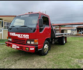
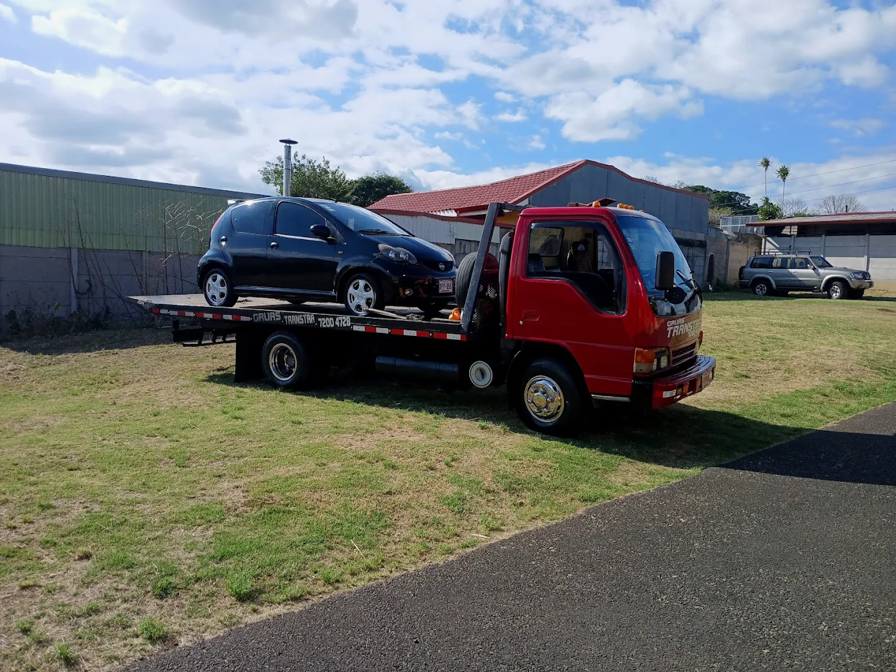

Servicio de Grúa Plataforma en todo el territorio nacional
CHATEAR POR WHATSAPPAunque nuestra base principal es Alajuela, brindamos cobertura total en Heredia, San José y cualquier punto de Costa Rica donde nos necesite. Estamos disponibles las 24 horas del día, los 365 días del año.
Nos caracterizamos por nuestra confiabilidad, seguridad y atención inmediata. Su tranquilidad es nuestra prioridad.


Transporte seguro para vehículos livianos y pesados con equipo moderno.
Rescate en carretera, cambio de llantas y paso de corriente en cualquier lugar.
No importa la hora ni el día, estamos listos para atender su emergencia.
Alajuela Aeropuerto, Río Segundo, Costa Rica.
Celular: 7200 4728
Horario: Siempre Abierto (24/7/365)